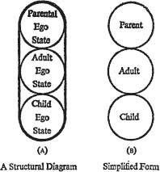

1 · Structural Analysis
OBESERVATION of spontaneous social activity, most productively carried out in certain kinds of psychotherapy groups, reveals that from time to time people show noticeable changes in posture, view-point, voice, vocabulary, and other aspects of behaviour. These behavioural changes are often accompanied by shifts in feeling. In a given individual, a certain set of behaviour patterns corresponds to one state of mind, while another set is related to a different psychic attitude, often inconsistent with the first. These changes and differences give rise to the idea of ego states.
In technical language, an ego state may be described phenome-nologically as a coherent system of feelings, and operationally as a set of coherent behaviour patterns. In more practical terms, it is a system of feelings accompanied by a related set of behaviour patterns. Each individual seems to have available a limited repertoire of such ego states, which are not roles but psychological realities. This repertoire can be sorted into the following categories: (1) ego states which resemble those of parental figures; (2) ego states which are autonomously directed towards objective appraisal of reality and (3) those which represent archaic relics, still-active ego states which were fixated in early childhood. Technically these are called, respectively, exteropsychic, neopsychic, and archaeopsychic ego states. Colloquially their exhibitions are called Parent, Adult and Child, and these simple terms serve for all but the most formal discussions.
The position is, then, that at any given moment each individual in a social aggregation will exhibit a Parental, Adult or Child ego state, and that individuals can shift with varying degrees of readiness from one ego state to another. These observations give rise to certain diagnostic statements. ‘That is your Parent’ means: ‘You are now in the same state of mind as one of your parents (or a parental substitute) used to be, and you are responding as he would, with the same posture, gestures, vocabulary, feelings, etc’ ‘That is your Adult’ means: ‘You have just made an autonomous, objective appraisal of the situation and are stating these thought-processes, or the problems you perceive, or the conclusions you have come to, in a non-prejudicial manner.’ ‘That is your Child’ means: ‘The manner and intent of your reaction is the same as it would have been when you were a very little boy or girl.’
The implications are:
1. That every individual has had parents (or substitute parents) and that he carries within him a set of ego states that reproduce the ego states of those parents (as he perceived them), and that these parental ego states can be activated under certain circumstances (exteropsychic functioning). Colloquially: ‘Everyone carries his parents around inside of him.’
2. That every individual (including children, the mentally retarded and schizophrenics) is capable of objective data processing if the appropriate ego state can be activated (neopsychic functioning) Colloquially: ‘Everyone has an Adult.’
3. That every individual was once younger than he is now, and that he carries within him fixated relics from earlier years which will be activated under certain circumstances (archaeopsychic functioning). Colloquially: ‘Everyone carries a little boy or girl around inside of him.’
At this point it is appropriate to draw Figure 1A, which is called a structural diagram. This represents, from the present viewpoint, a diagram of the complete personality of any individual. It includes his Parental, Adult, and Child ego states. They are carefully segregated from each other, because they are so different and because they are so often quite inconsistent with each other. The distinctions may not be clear at first to an inexperienced observer, but soon become impressive and interesting to anyone who takes the trouble to learn structural diagnosis. It will be convenient henceforth to call actual people parents, adults or children, with no capital letters; Parent, Adult and Child, capitalized, will be used when ego states are referred to. Figure 1B represents a convenient, simplified form of the structural diagram.
Before we leave the subject of structural analysis, certain complications should be mentioned.
1. The word ‘childish’ is never used in structural analysis, since it has come to have strong connotations of undesirability, and of something to be stopped forthwith or got rid of. The term ‘childlike’ is used in describing the Child (an archaic ego state), since it is more biological and not prejudicial. Actually the Child is in many ways the most valuable part of the personality, and can contribute to the individual’s life exactly what an actual child can contribute to family life: charm, pleasure and creativity. If the Child in the individual is confused and unhealthy, then the consequences may be unfortunate, but something can and should be done about it.
2. The same applies to the words ‘mature’ and ‘immature’. In this system there is no such thing as an ‘immature person’. There are only people in whom the Child takes over inappropriately or unproductively, but all such people have a complete, well-structured Adult which only needs to be uncovered or activated. Conversely, so-called ‘mature people’ are people who are able to keep the Adult in control most of the time, but their Child will take over on occasion like anyone else’s, often with disconcerting results.

Figure 1. A Structure Diagram
3. It should be noted that the Parent is exhibited in two forms, direct and indirect: as an active ego state, and as an influence. When it is directly active, the person responds as his own father (or mother) actually responded (‘Do as I do’). When it is an indirect influence, he responds the way they wanted him to respond (‘Don’t do as I do, do as I say’). In the first case he becomes one of them; in the second, he adapts himself to their requirements.
4. Thus the Child is also exhibited in two forms: the adapted Child and the natural Child. The adapted Child is the one who modifies his behaviour under the Parental influence. He behaves as father (or mother) wanted him to behave: compliantly or precociously, for example. Or he adapts himself by withdrawing or whining. Thus the Parental influence is a cause, and the adapted Child an effect. The natural Child is a spontaneous expression: rebellion or creativity, for example. A confirmation of structural analysis is seen in the results of alcohol intoxication. Usually this decommissions the Parent first, so that the adapted Child is freed of the Parental influence, and is transformed by release into the natural Child.
It is seldom necessary, for effective game analysis, to go beyond what has been outlined above as far as personality structure is concerned.
Ego states are normal physiological phenomena. The human brain is the organ or organizer of psychic life, and its products are organized and stored in the form of ego states. There is already concrete evidence for this in some findings of Penfield and his associates.1,2 There are other sorting systems at various levels, such as factual memory, but the natural form of experience itself is in shifting states of mind. Each type of ego state has its own vital value for the human organism.
In the Child reside intuition,3 creativity and spontaneous drive and enjoyment.
The Adult is necessary for survival. It processes data and computes the probabilities which are essential for dealing effectively with the outside world. It also experiences its own kinds of setbacks and gratifications. Crossing a busy highway, for example, requires the processing of a complex series of velocity data; action is suspended until the computations indicate a high degree of probability for reaching the other side safely. The gratifications offered by successful computations of this type afford some of the joys of skiing, flying, sailing, and other mobile sports. Another task of the Adult is to regulate the activities of the Parent and the Child, and to mediate objectively between them.
The Parent has two main functions. First, it enables the individual to act effectively as the parent of actual children, thus promoting the survival of the human race. Its value in this respect is shown by the fact that in raising children, people orphaned in infancy seem to have a harder time than those from homes unbroken into adolescence. Secondly, it makes many responses automatic, which conserves a great deal of time and energy. Many things are done because ‘That’s the way it’s done.’ This frees the Adult from the necessity of making innumerable trivial decisions, so that it can devote itself to more important issues, leaving routine matters to the Parent.
Thus all three aspects of the personality have a high survival and living value, and it is only when one or the other of them disturbs the healthy balance that analysis and reorganization are indicated. Otherwise each of them, Parent, Adult, and Child, is entitled to equal respect and has its legitimate place in a full and productive life.
REFERENCES
1. Penfield, W., ‘Memory Mechanisms’, Archives of Neurology & Psychiatry, 67: 178–198,1952.
2. Penfield, W., and Jasper, H., Epilepsy and the Functional Anatomy of the Human Brain, Churchill, 1954, Chapter 11.
3. Berne, E., ‘The Psychodynamics of Intuition’, Psychiatric Quarterly, 36: 294–300, 1962.